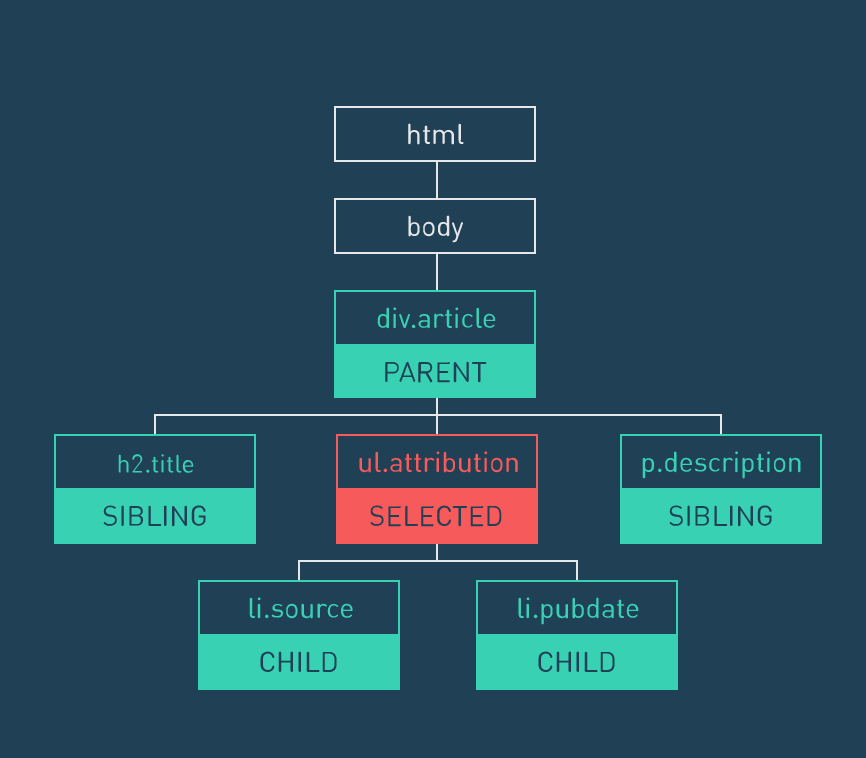
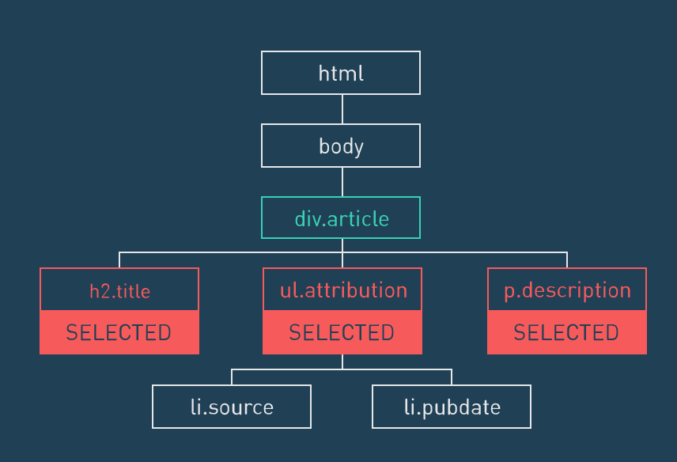

HTML5, CSS3, jQuery, Bootstrap 網頁設計基礎班
蔡智晴
jQuery 是什麼？
- 一套受歡迎的 Javascript 函式庫
- 加快開發速度
- 提供簡便的特效
- 免除瀏覽器相容性的麻煩

jQuery 可以做的事情
- 事件 events: 回應使用者的動作
- DOM Manipulation: 操作網頁上 HTML 的元素
- 效果 effects: 加上動畫
最基本的～把jQuery加近來！
就像增加一個外部的 JavaScript 檔案一樣加近來
Google CDN
確保我們不會提早做事情
$(document).ready(function() {
等網頁讀好我們在開始動作
});
剛剛那件事的簡寫
$(function(){
// jQuery methods go here...
});
jQuery 精神
- 著重於 JavaScript 跟 HTML 之間的關連
- 我們幾乎只會坐兩件事情
- 選（找）東西
- 對選（選）到的東西做點事情
jQuery 變數命名
會用$做開頭
var $變數 = 值;
.text() / .html() / .css()
- .text() 只能加入文字
- .html() 就可以加入 html 的元素 <script> 不行
- .css() 改變選取物的 css
- 東西.css("屬性","值")
- 東西.css({"屬性": "值",
"屬性": "值"})
.val()
- 主要用在表單上面，可以抓取使用者輸入的值
- 試著練習改成使用 textarea
- 那如果.val()裡面有值的時候會發生什麼事情
See the Pen val by Candy (@stringpiggy) on CodePen.
Ajax
- Asynchronous JavaScript and XML 的縮寫
- 是一種不需要重新整理頁面，透過JavaScript來與伺服器交換資料、更新網頁內容的技術。
- Ajax without jQuery
課堂練習六：Ajax
- Ajax 用法範例：Thimble Codepen
- 做一個 input 讓使用者輸入帳號
- 做一個 button 讓使用者點下去的時候可以查詢輸入的帳號的大頭貼
- 把大頭貼用
 在頁面上顯示出來
在頁面上顯示出來
- 示意圖
Like Button - .toggleClass() 練習
Like
- toggle 的意思就像開關一樣，點一次開、再點一次關、再一次就開...
- 在 jQuery 裡，this 的意思是指我們上一層所選到的物件
大家可以試著在前面加入一個讚的圖示 (font-awesome)
剛剛我們使用了
- toggleClass()
- jQuery 的 this
- event: click
.ready()
根據 jQuery 官網的敘述，.ready() 就是
A function to execute after the DOM is ready.
所以 $(document) 選取 DOM，.ready() 會在 DOM 準備好了之後才執行()裡的動作
event: keyup/keydown
為什麼不用 keypress 呢？
- .addClass() 就是加 class 進去
- .removeClass() 就是移除 class
- 看到 function 名稱有 Class，就不用加.
練習
.append() / .appendTo()
- B.append(A) 把 A 塞到 B 裡面
- B.appendTo(A) 把 B 塞到 A 裡面
CodePen │ Thimble 練習
.prepend() / .prependTo()
- B.prepend(A) 把 A 塞到 B 裡面（從前面）
- B.prependTo(A) 把 B 塞到 A 裡面（從前面）
也可以加選取的東西
.remove() / .add()
- .remove() 移除選取物件
- .add() 增加選取物件
練習一下
.hide() / .show() / .toggle()
- .hide() 隱藏選取物件
- .show() 顯示選取物件
- .toggle() 在 .hide() / .show() 之間動
- (時間) ＝> 動畫
練習
.next() / .prev() /
.first() / .last()

若我們在 ul.attribution 的位置
- h2.title 就會是 prev
- p.description 就會是 next
- first 和 last 會是誰呢？(要在同一層使用)
順便練習開變數
.children() / .parent()
- .children() 找下一層的子代
- .parent() 找上一層的親代

找小孩囉～
.attr() / .prop()
- .attr() 取得屬性的值
- .prop() 和 .attr() 的中文很像，所以看使用時機
- .prop() 具有 true 和 false 两个属性的属性，如 checked, selected 或者 disabled 使用prop()，其他的使用 attr()
See the Pen check example by Candy (@stringpiggy) on CodePen.
- 若屬性的值並非數字，如：background-color，則大都不能直接用這個方法
- non-style 屬性如：ScrollTop, ScrollLeft 可以使用
- 簡寫如：background, font, border 沒有完整支援
- 注意：如果要使用動畫的對象為 hidden 的話，雖然動畫會跑但我們看不到
- jQuery 本身只有兩種執行模式：swing, linear
關於使用 library、plugin、framework 等外部資源
- 用 library 或別人寫好的 plugin 好像很遜？不是自己寫的？但是還是要懂一些基本才能用得得心應手～而且有些 plugin 也不是那麼容易上手
- 有時候先把東西做出來反而會對背後的原理比較有興趣：）
- 寫網頁、寫程式剛開始也是臨摹，等臨摹夠了，自然就會想要努力創造新東西
- 重點是要主動找資料，很多答案就在 Google 裡面，但不是每一個人都挖得出來
英文好會輕鬆超多
實作二：還記得上次的產品網站嗎？
- 想要重新來過可以使用這個：）
- Bootstrap Javascript 的部分需要用到 jQuery，記得先加入 jQuery 唷
- 加入 Bootstrap JavaScript 的部分
- 更新 Navbar
- 介紹 Bootstrap JavaScript 功能
- 今天做完就可以交到課堂練習九囉，至少要把 Navbar 功能完成以及加入動畫
ScrollSpy（如課程網站）
- 需要 Bootstrap nav
- 相對應的 ID
- 加入下面的 JavaScript
$('body').scrollspy({
target: '#top-navbar'
})
- 更多效果
- 拖曳等等的互動
- 對話視窗之類的 Widgets
- 可以看看 DEMO
- 如何使用？一樣到 cdnjs 找
基礎班沒辦法帶大家認識到 Sass / SCSS 的部分
- 網站好不容易寫好了，但最近想要把顏色換掉，色碼一個一個改好辛苦
- Sass 可以設定變數，這樣就可以一次換了～